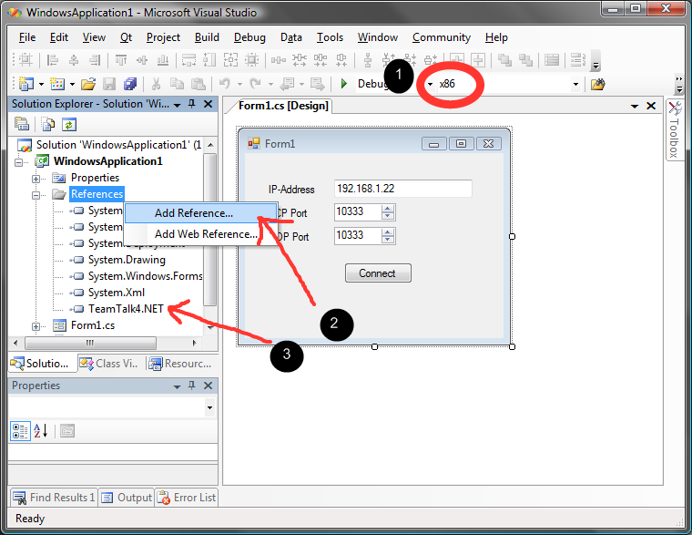
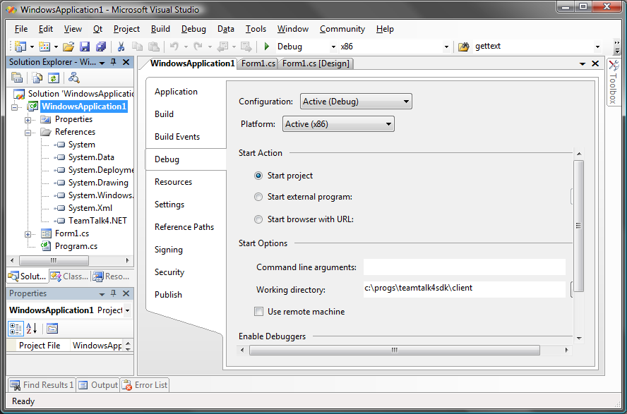

- Generated on Wed Aug 6 2025 13:38:03 for TeamTalk 5 .NET DLL by
 1.10.0
1.10.0
|
TeamTalk 5 .NET DLL Version 5.19A
|
The TeamTalk C-API DLL is located in the Library/TeamTalk_DLL folder of the SDK. This DLL along its .NET wrapper DLL are required when creating a TeamTalk project for .NET framework.
The TeamTalk DLL requires Windows 7/8/10 and comes for both 32 and 64-bit architecture.
The following sections explain how to set up the TeamTalk DLL so it can be used in a .NET project.
The TeamTalk .NET DLL is built using the Visual Studio project located in the "Library/TeamTalk.NET" folder of the SDK.
The TeamTalk .NET DLL simply wraps the C-API DLL so .NET developers don't have to deal with messy native code calls.
Since the .NET DLL is a wrapper for the C-API DLL the TeamTalk C-API DLL must also be included with the .NET DLL. The TeamTalk C-API DLL is located in Library/TeamTalk_DLL folder.
This section shows how to set up Visual Studio (VS) to use the TeamTalk .NET DLL in a VS-project. The .NET DLL contains native code and it is therefore important to configure the VS-project to be aware of this. The following image shows what needs to be configured in VS:

If the PC used for developing the user application is running Windows x64 and the developer wants to use the x86 .NET DLL the project must be configured to run as an x86 application. Item 1 in the picture above shows where to to this. Simply open the "Configuration Manager", add the x86 configuration and set it as the active Platform.
Next the TeamTalk.NET.dll must be added as a reference to the project. Item 2 shows where to do this. When the "Add
Reference" dialog opens click the "Browse"-tab and find the TeamTalk5.NET.dll file. The list of references will now contain TeamTalk.NET as is seen in item 3.
Last we need to set the working directory so the TeamTalk native DLLs can be loaded. This is done by clicking Properties for the project and setting the "Working directory" in the Debug-tab as shown below:

To check that everything is now in working order try adding the following code to the Windows Form application's contructor and run the application:
Hopefully the application now starts without any errors. If an exception occurs about missing dependencies then ensure that the application is able to load the TeamTalk client's DLL file, i.e. ensure the working directory is correct.
If the above application starts then move on to section Client Programming Guide to see how to use the TeamTalk client DLL.